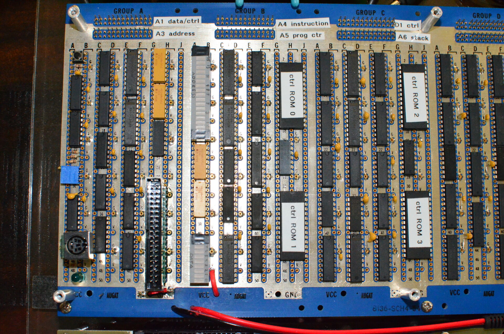

Click photos to open a full size version in a new tab.
The Wire Wrap Odyssey homebrew computer in action.
December 31, 2023
Top view of the system. From left to right, video card, CPU, and peripherals board.
December 31, 2023
Detailed view of the video card. Note the 32KiB dual-port RAM in the PLCC adapter: this
is the primary RAM for the computer as well. Due to the physical proximity to the RAM,
the program ROM (addresses 0x0000-0x3fff) is sited here as well.
December 31, 2023

Detailed view of the left side of the CPU board. Group A contains the clock and reset logic,
the program counter, bus pull-up resistors, and the RAM interface. Group B contains the
address and data bus visualization, instruction and sequence registers, and control ROMs
0 and 1. Group C contains the transfer registers, the stack pointer register, and control
ROMs 2 and 3.
December 31, 2023
Detailed view of the right side of the CPU board. Group D contains registers A
and B and the ALU. Group E contains registers C and
D. Group F contains the interrupt control logic, some constant registers,
and the first three peripherals (PS/2 keyboard, real time clock, and UART).
December 31, 2023
The 1MiB extended RAM. The D and E page registers, address decoding logic, and the two 512KiB
RAMs are in group A.
December 31, 2023
Backside of the CPU and peripheral boards (the video card is partially visible at the top).
Yellow wires are for address bus connections, red wires for data bus connections (and Vcc),
green wires connect registers A and B to the ALU, black wires are for control signals, and
blue wires are for glue logic.
December 31, 2023
Detailed view of wire wrap posts.
December 31, 2023
Later wire wrapping is neat and tidy like this, with the post numbers easily visible for ease
of troubleshooting and modifications.
December 31, 2023
Wire wrap detail on the video card. This was my first wire wrapping ever and it shows. Messy
wiring and inconsistent use of wire colors.
December 31, 2023
Wire Wrap Odyssey on display at the 2024 Vintage Computer Festival SoCal
February 17, 2024
Demonstrating debugging the Odyssey using my 1922-vintage HP 16500B logic analyser
at the 2024 Vintage Computer Festival SoCal
February 17, 2024